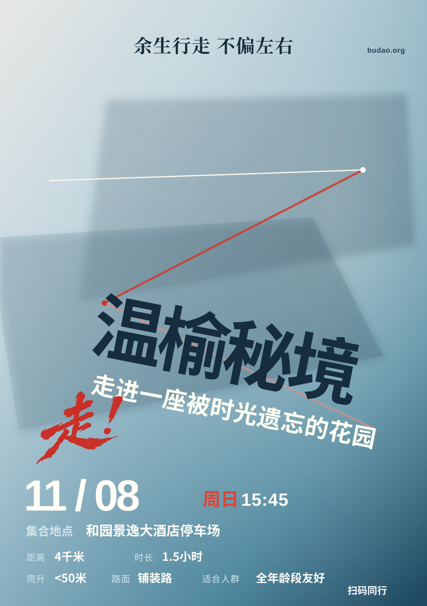

参考 · Porsche Rennsport Reunion IV2011 · Dennis Simon

RM Sotheby's 收藏品原图，未修改。若外部图像无法加载，请通过下面的出处链接访问原图。
步道 · 逐梦动势 V5程序化 SVG · 1080 × 1530

正在加载 V5 矢量稿…

Logo、完整广告语和缩小30%的网址保持 y=133 共基线。
「温榆秘境」和副题一起向右下方平移，保持相同的 11° 倾斜，不遮挡照片主体。
从上一张 AI 视觉稿中仅提取书法字形，制作独立 SVG 资产；此后可直接复用，不再调用生图工具。
真实路线介绍从上方白线开始，沿红线一直延续至下段，文字半透明度 50%，不另加装饰线。
自上而下的银蓝、湖蓝到深海蓝，覆盖整幅画面；底部没有独立的色块信息栏。
日期、时间、集合地点保持清晰；距离、时长、爬升、路面、适合人群采用标签与内容分层，适合人群移至路面右侧，原始二维码不变。
验收边界：这是一张独立设计原型，尚未通过正式视觉验收，二维码也还需要真实设备扫码验证。没有更改帐篷发布与后台逻辑，没有接入付费 AI 图像 API。